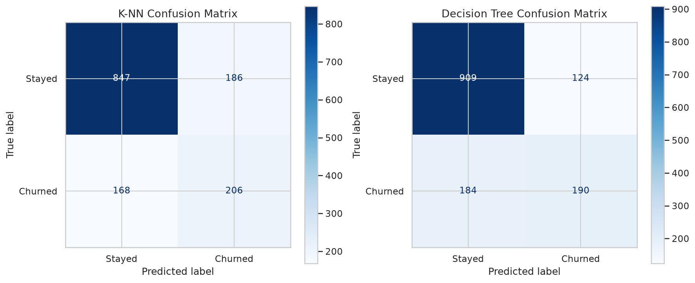
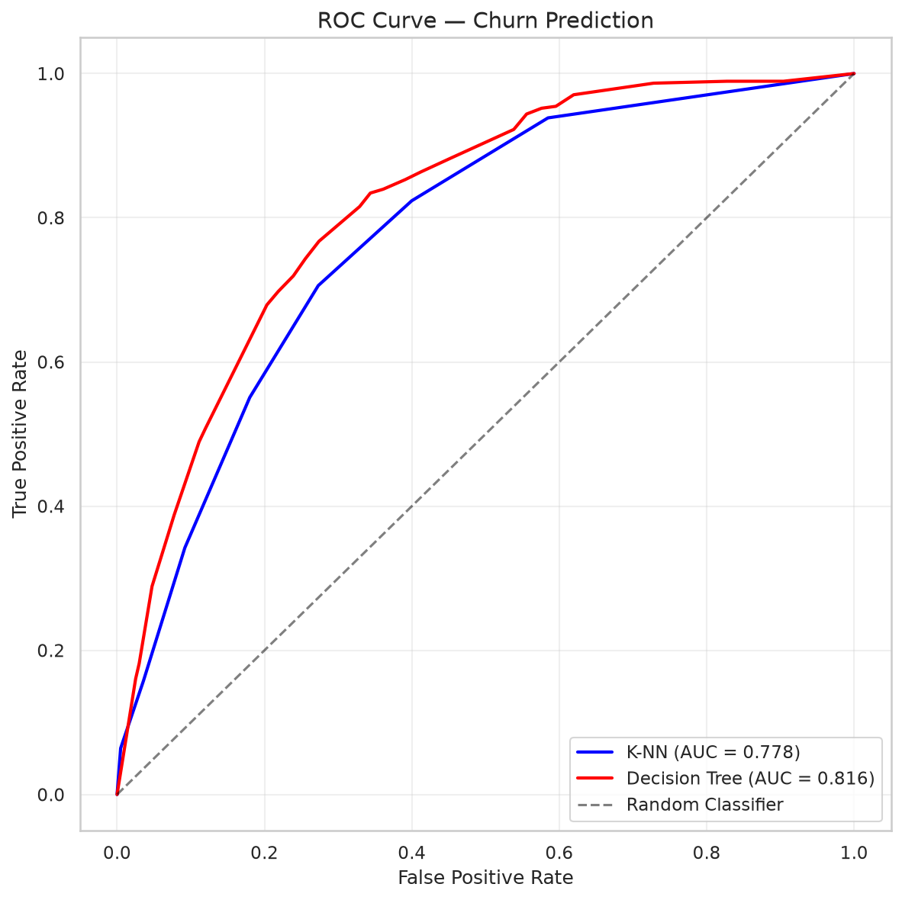

📊 Dataset: Telco Customer Churn (Kaggle, 7,043 customers, 21 features)
▶ Run in Google Colab"kw">import pandas "kw">as pd
df = pd.read_csv('Telco-Customer-Churn.csv')
"kw">print(f'Shape: {df.shape}')
"kw">print(f'Columns: {list(df.columns)}')
"kw">class="cmt"># Clean numeric column
df['TotalCharges'] = pd.to_numeric(df['TotalCharges'], errors='coerce')
df = df.dropna(subset=['TotalCharges'])
"kw">class="cmt"># Create target
df['Churn_Label'] = (df['Churn'] == 'Yes').astype(int)
"kw">print(f'Churn rate: {df["Churn_Label"].mean():.1%}')"kw">class="cmt"># Encode categorical features
"kw">from sklearn.preprocessing "kw">import LabelEncoder
cat_cols = df.select_dtypes(include=['object']).columns.drop(['customerID', 'Churn'])
"kw">for col "kw">in cat_cols:
le = LabelEncoder()
df[col + '_enc'] = le.fit_transform(df[col].astype(str))
features = ['tenure', 'MonthlyCharges', 'TotalCharges'] + [c+'_enc' "kw">for c "kw">in cat_cols]
"kw">print(f'Feature matrix: {len(features)} features for {len(df)} customers')"kw">from sklearn.neighbors "kw">import KNeighborsClassifier
"kw">from sklearn.metrics "kw">import accuracy_score, classification_report
knn = KNeighborsClassifier(n_neighbors=7)
knn.fit(X_train_scaled, y_train)
y_pred = knn.predict(X_test_scaled)
"kw">print(f'Accuracy: {accuracy_score(y_test, y_pred):.4f}')
"kw">print(classification_report(y_test, y_pred, target_names=['Stayed','Churned']))
Confusion matrices for K-NN and Decision Tree on real churn data
"kw">from sklearn.tree "kw">import DecisionTreeClassifier
"kw">from sklearn.metrics "kw">import roc_auc_score
dt = DecisionTreeClassifier(max_depth=5, min_samples_leaf=50, random_state=42)
dt.fit(X_train, y_train)
y_pred = dt.predict(X_test)
y_prob = dt.predict_proba(X_test)[:, 1]
"kw">print(f'Accuracy: {accuracy_score(y_test, y_pred):.4f}')
"kw">print(f'ROC AUC: {roc_auc_score(y_test, y_prob):.4f}')
"kw">class="cmt"># Feature importance
fi = pd.DataFrame({'Feature': features, 'Importance': dt.feature_importances_})\
.sort_values('Importance', ascending="kw">False).head(5)
"kw">print(fi.to_string(index="kw">False))
ROC AUC curves for K-NN and Decision Tree on churn prediction
1️⃣ 数据中 73.5% 的客户没有流失。如果模型"全部预测不流失"，准确率是多少？这和我们的 78% 比怎么样？
2️⃣ ROC AUC = 0.82 是什么意思？随机猜测是多少？完美是多少？
3️⃣ 如果公司只有预算联系 10% 的客户做挽留，你应该关注 Precision 还是 Recall？
4️⃣ 为什么 Tenure 是最重要的特征？这对业务有什么启示？